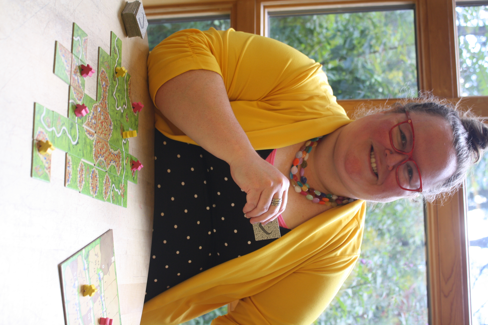

Support starts with believing that someone understands what you are saying. Not only that they understand it, but that they can see why someone would think that way. Yet, finding the right language to convey the way you think in a way that bridges into someone else’s world can be challenging. This is in my wheelhouse!
Have you been told to not overthink things? Or that you intellectualize too much? Instead of framing those as barriers, I create space for engaging that thinking and leveraging it towards what you value. I want to learn your voice, your language, and help you amplify it.
My central commitment is to the LGBTQIA2S+ community. I specialize with intersections of queer and neurodiverse (autistic, ADHD, etc.) identities. I also enjoy working with individuals on stress related to higher education (college, grad school).
I help clients think through: anxiety and/or depression; clarifying/questioning identities such as gender and/or sexuality; academic stress (including graduate work!); navigating transitions; healing from trauma (religious, sexual, racial, medical, combat, academic, and/or other); and more.
You can learn more about my services here!
In addition to a Masters of Social Work, I have a PhD in Philosophy with a focus on gender, queer theory, and trans theory. This means that I have a lot of conceptual tools at your disposal for engaging questions of identity, intersectionality, and how to negotiate conflicting social expectations and demands.
In my free time, I like to play board games (especially cooperative ones!), do crossword puzzles, and crochet.
